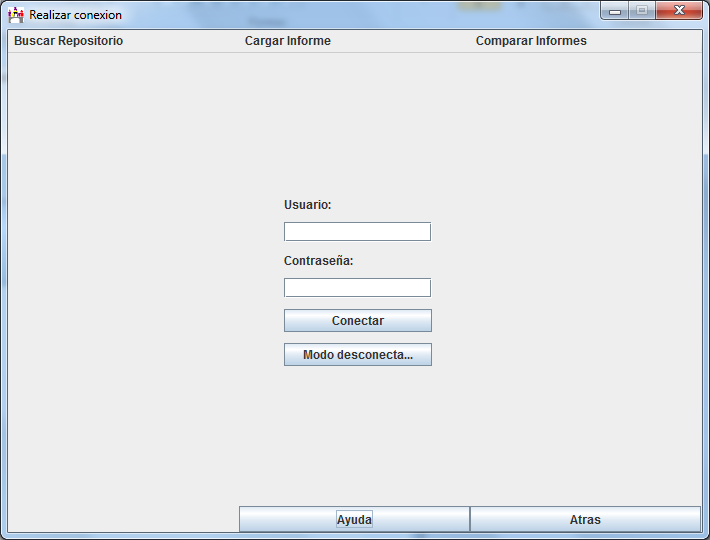

En esta apantalla aparecen dos campos de texto para introducir un usuario y su contraseña correspondiente que se encuentre ya registrado en la plataforma seleccionada en la pantalla de inicio.
Aparecen también dos botones:
- Conectar: autentifica el usuario introducido mediante la contraseña suministrada en la
plataforma seleccionada para trabajar.
- Modo desconectado: Evita realizar una autentificación en la plataforma, pero para
renuncia a la tasa de peticiones de 5000/hora por una más reducida de 60/hora por ip.
